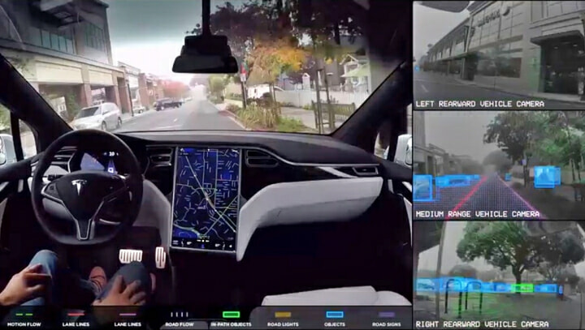
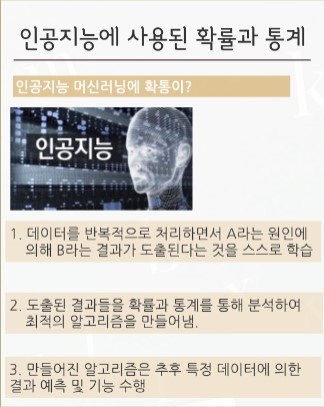
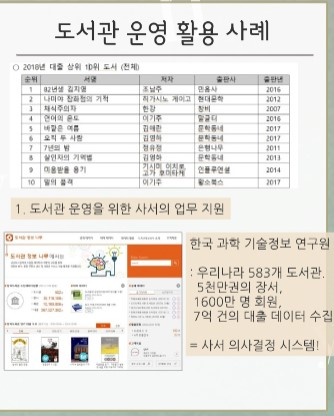

확률과 통계와 컴퓨터의 심화적 탐구
연관성에 이야기 했듯이 인공지능은 많이 발전이 있는데 시장에서 많이 빛을 발하고 있는것은 "자율주행 자동차"이다.
자율주행 자동차는 테슬라에서 관심을 가지고 있는데 테슬라의 자율주행 자동차는 카메라에서 들어오는 이미지를
머신러닝으로 처리해 지도를 만드는 방식이다
이런 기술은 오토파일럿 기술이라고 부른다.
이런 오토파일럿 기술은 여러가지의 방식이 있는데 그 중 잘 알려진 것은 "라이다"이다.
라이다는 레이저 빔을 발사해 되돌아오는 시간을 측정해 컴퓨터가 지도르를 그린다.
이 기술의 장점은 야간에도 주변을 인식할 수 있는 장점이 있지만 수율이 낮다보니 가격이 비싸다.
그리고 레이저를 대신하여 사용할 수 있는 것으로 레이더가 있는데
레이더는 전파를 발생해서 측정을 하는데 사물의 정확한 정체까지는 인식을 못한다는 단점이 있다.

일단 우리가 알아야하는 것이 있다고 하면 현실에 있고 우리랑 가까이 있는 인공지능은 인공지능이 아니다.
이게 뭔 소리냐? 라고 생각할 수 있습니다. 네! 저희 주위에 있는 인.공.지.능.은 그렇다는 겁니다.
"십대가 알아야할 인공지능과 4차 산업혁명의 미래"에서는 인공지능을 2가지로 나누는데
자아를 가지고 혼자 생각을 하는 인공지능을 "강한 인공지능"
자아를 가지고 있지 않고 시키는 일만 하는 인공지능을 "약한 인공지능"이라고 합니다.
그래서 대체 무엇을 말하고 싶냐면 만약 강한 인공지능을 개발하는 것이 진정한 인공지능의 개발이라는 것이다.
솔찍히 자아를 가진다는 것부터 확률과 통계에 관련이 없을 수 있다. 하지만 인간의 특성과 비슷하게 만들기 위해서는 확률과 통계가 필요한 것이다.
다음으로는 빅데이터는 알고리즘이 베이스로 하여 비슷한데 일단 먼저 "온라인 쇼핑몰"에서 사용이 된다.
온라인 쇼핑몰에서는 뉴 트렌드로 검색창 없는 쇼핑몰을 만들려고 하는데 이때 사용되는게 빅데이터이다.
그다음으로는 의료분야에서 사용되는데 확률과 통계를 이용하여 기록과 분석 그리고 환자의 생존 가능성을 예측한다.

위 사진과 같은 경우도 있고 도서관에서도 사용이 된다고 한다.

이런 사소한 곳에서도 사용이 되기 때문에 우리에 역사랑 맞먹는다고 하는게 이해가 되는것 같다.